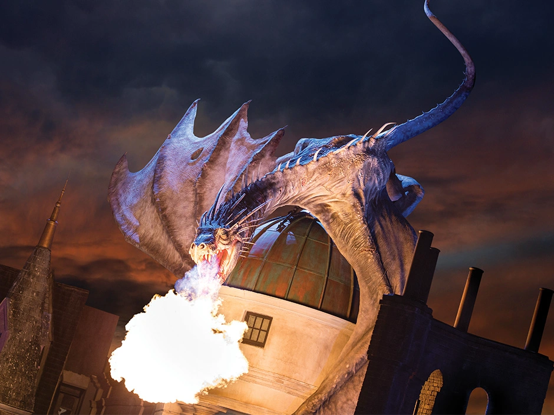

Os Guardiões das Profundezas
O Dragão de Gringotes (da espécie Barriga-de-Ferro Ucraniana) é utilizado para guardar os cofres de alta segurança no Banco Bruxo Gringotes, garantindo proteção inexpugnável para tesouros de alto valor.

Barriga-de-Ferro Ucraniana
A maior e mais imponente espécie de dragão conhecida no mundo mágico. Utilizado na guarda direta de vários cofres de alta segurança nas profundezas de Gringotes.
Cascata do Ladrão
Queda d'água mágica nos trilhos das profundezas que anula instantaneamente feitiços de disfarce, Poção Polisuco e ilusões de intrusos.
Clacadores de Proteção
Instrumentos sonoros utilizados pelos duendes credenciados para subjugar e guiar os dragões durante acessos devidamente autorizados aos cofres.
Protocolo de Acesso aos Cofres de Alta Segurança
-
01
Condução Especializada: Apenas os duendes mais antigos conduzem os carrinhos até as áreas protegidas pelos dragões.
-
02
Passagem pela Cascata: Anulação de qualquer disfarce mágico antes da aproximação do perímetro do dragão.
-
03
Validação de Linhagem: Autenticação mágica direta nas portas seladas por runas ancestrais no Nível 600+.